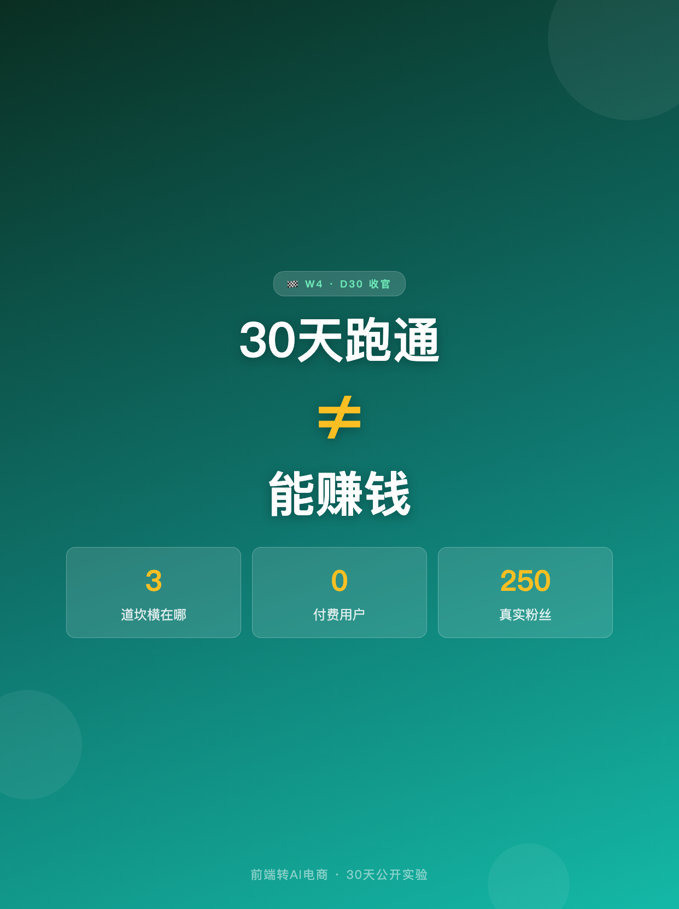
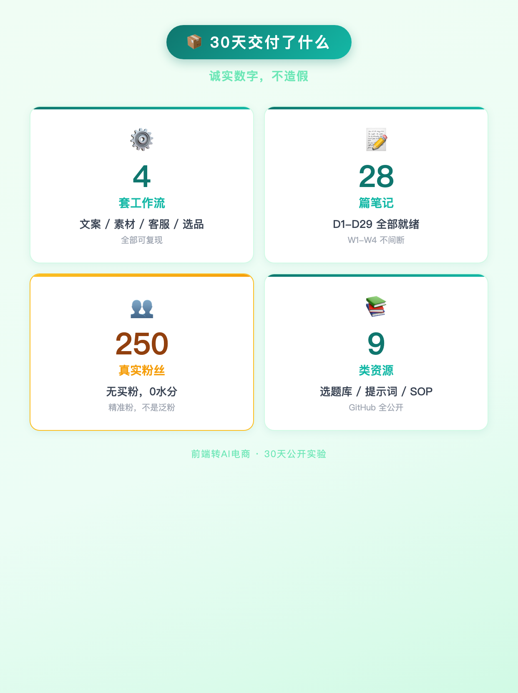
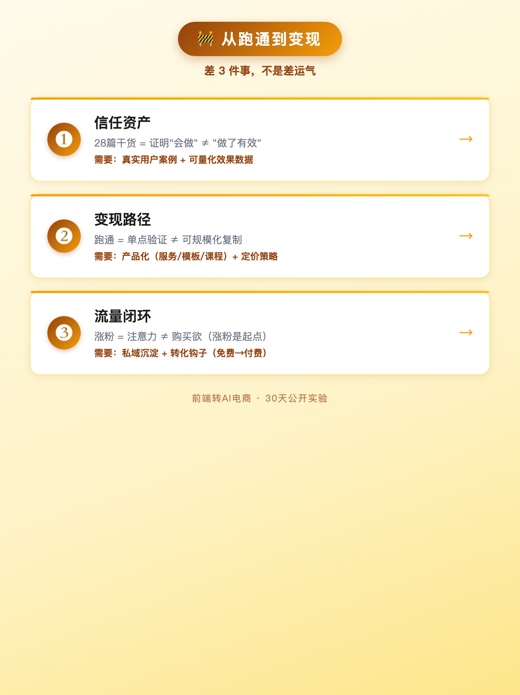
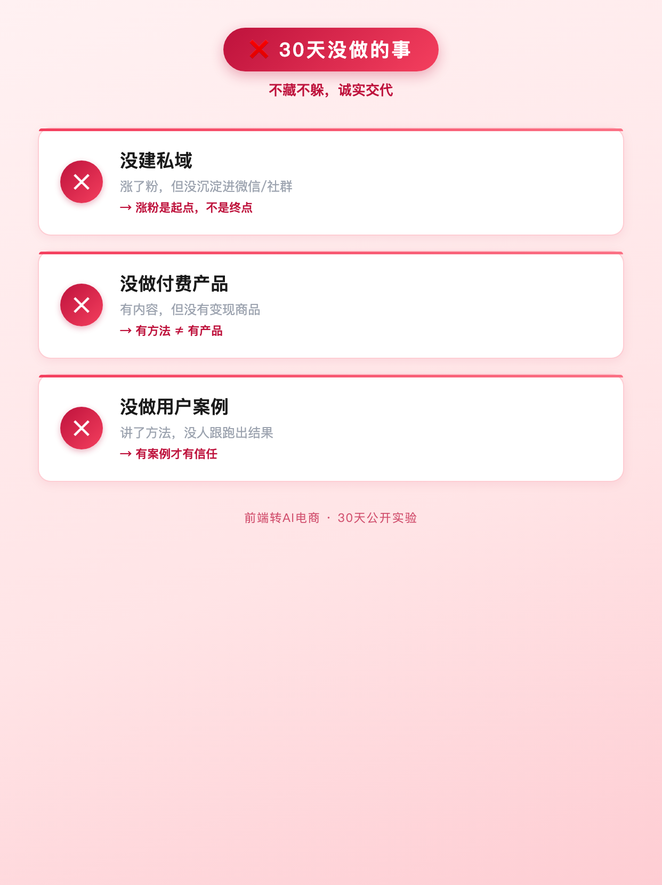
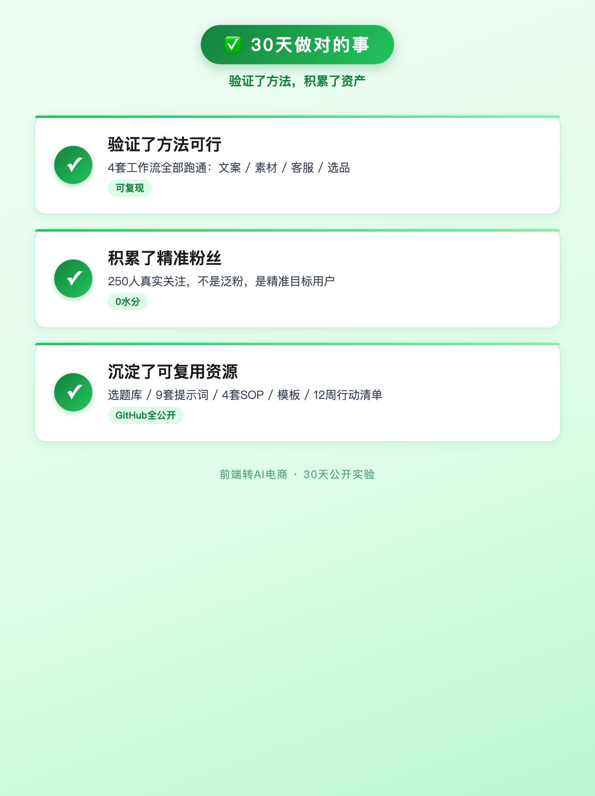
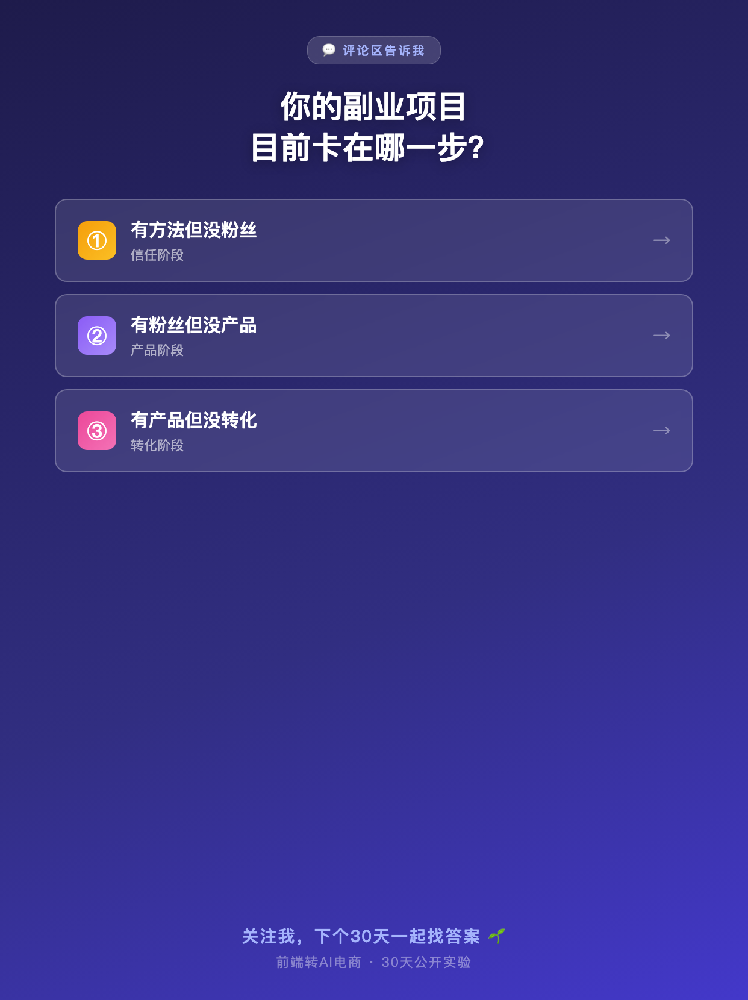

使用说明: 6 张图按顺序上传,标题「30天跑通≠能赚钱，差什么？」(XHS 上限 20 字 ✓ · 12 字)。
配图通过 HTML+Chrome headless 截图 1242×1660 PNG 生成(中文 100% 清晰,墨绿主色 + 对比结构版式)。






30天跑通≠能赚钱，差什么？
30天跑完，4套工作流通通可复现。 但0付费用户 = 还没商业化。 跑通和赚钱，中间隔着3道坎。 ───── 30天交付了什么（诚实数字）───── ✅ 4套可复现工作流（文案/素材/客服/选品） ✅ 28篇笔记（D1-D29） ✅ 250真实粉丝（无买粉，0水分） ✅ 9类资源全公开（GitHub仓库，小红书主页置顶） 跑通 ≠ 变现。 跑通是证明"方法可行"，变现还需要另外3件事。 ───── 从跑通到变现，差3件事 ───── ❶ 信任资产 28篇干货 = 证明"会做"，不证明"做了有效" 有方法的人很多，有用户案例的人很少 需要：真实用户案例 + 可量化效果数据 ❷ 变现路径 跑通 = 单点验证，变现 = 可规模化复制 有工作流 ≠ 有产品 需要：产品化（把工作流打包成服务/模板/课程）+ 定价策略 ❸ 流量闭环 笔记涨粉 = 注意力，不是购买欲 涨粉是起点，不是终点 需要：私域沉淀（微信/社群）+ 转化钩子（免费→付费路径） ───── 30天没做的事（不藏不躲）───── ❌ 没建私域（涨了粉，但没沉淀进微信） ❌ 没做付费产品（有内容，没有变现商品） ❌ 没做用户案例（讲了方法，没人跟跑出结果） ───── 30天做对的事 ───── ✅ 验证了方法可行（4套工作流全跑通） ✅ 积累了一批精准粉丝（250人，不是泛粉） ✅ 沉淀了9类可复用资源（选题库/提示词/SOP/模板） ───── 30天最终结论 ───── 跑通 ≠ 赚钱，但跑通是赚钱的前提。 30天，证明"能跑"就够了。 "怎么赚"是下一个30天的命题。 ───── 互动 👇 你的副业/项目目前卡在哪一步？ ① 有方法但没粉丝 → 信任阶段 ② 有粉丝但没产品 → 产品阶段 ③ 有产品但没转化 → 转化阶段 评论区告诉我，关注下个30天 🌱
#前端转AI电商
#30天实验
#电商副业
#方法论
#可复现≠可商业化
♡ 收藏
💬 评论
↗ 分享
📋 一键复制
📊 D30 数据复盘
30 天最终结论: 跑通 ≠ 赚钱，但跑通是赚钱的前提。30 天，证明"能跑"就够了。"怎么赚"是下一个 30 天的命题。
诚实数据集(全程数字不造假): 4 套工作流 / 28 篇笔记(D1-D29) / 250 真实粉丝(无买粉) / 0 付费用户(诚实反向预期)
从跑通到变现差3件事: ❶ 信任资产(用户案例+效果数据) / ❷ 变现路径(产品化+定价) / ❸ 流量闭环(私域沉淀+转化钩子)
30天没做的事: 没建私域 / 没做付费产品 / 没做用户案例 — 诚实交代，不藏不躲
30天做对的事: 验证了方法可行 / 积累了精准粉丝 / 沉淀了9类可复用资源
3个阶段的信号: 有方法但没粉丝(信任阶段) / 有粉丝但没产品(产品阶段) / 有产品但没转化(转化阶段) — 评论区收集用户卡点，作为下一个30天选题依据
🚀 发布前 15 分钟 SOP
- 打开小红书 App → 创建笔记
- 选 6 张图(封面 1 + 交付 1 + 3道坎 1 + 没做 1 + 做对 1 + 互动 1)，按顺序排好
- 选 3:4 竖图
- 标题:30天跑通≠能赚钱，差什么？(12 字 ✓ XHS 上限 20 字)
- 正文:点「复制正文」按钮粘贴
- 加 5 个标签
- 选发布时间:周三 20:00-21:00(30天收官日，方法论 + 情绪双重加持)
- 发布
📈 发布后 24 小时 SOP
| 时间 | 动作 | 目标 |
|---|---|---|
| 10 分钟 | 自己评论「30 天最终结论：跑通 ≠ 赚钱。你卡在哪一步？①信任②产品③转化，评论区告诉我 👇」 | 激活三选一评论区 |
| 30 分钟 | 每条评论认真回复，尤其"卡在哪一步"的分类 | 收集下一30天选题数据 |
| 2 小时 | 截图保存 D30 收官数据 + Top 3 卡点类型 | 30 天完整复盘素材 |
| 6 小时 | 看一次数据(曝光/收藏/评论/卡点类型分布) | 判断方法论收官内容表现 |
| 24 小时 | 统计 Top 3 卡点，作为下个 30 天选题方向核心依据 | 选题数据驱动 |
🎯 Day 30 数据目标
| 指标 | 目标 | 备注 |
|---|---|---|
| 曝光 | ≥ 3000 | 30天收官 + 方法论天然高曝光 |
| 收藏率 | ≥ 15% | 方法论 + 最终结论 = 必收藏型 |
| 评论 | ≥ 300 | 三选一互动 + 收官情绪双重驱动 |
| 涨粉 | ≥ 200 | 收官内容关注动机最强 |
| Top 3 卡点 | 3 类都有 | 决定下个 30 天选题核心方向 |
📅 30天全览 · 每日发布节奏
| 周 | 日期 | Day | 类型 | 核心主题 | 状态 |
|---|---|---|---|---|---|
| W1 | 6/22-6/28 | D1-D7 | 人设+工作流 | 立人设 / 3套AI流程 / 生图工具 / 4类翻车 / 程序员优势 / 重做痛点 / W1复盘 | 7篇 ready |
| W2 | 6/30-7/6 | D8-D14 | 工作流深化 | 商品图自动命名 / AI日报 / 选品 / 文案模板 / W2复盘 | 7篇 ready |
| W3 | 7/7-7/13 | D15-D21 | 避坑+案例 | AI翻车 / 提示词 / 用户案例 / W3复盘 | 7篇 ready |
| W4 | 7/14-7/21 | D22-D29 | MVP验证+收官 | 店主案例 / MVP总结 / 数据复盘 / 资源包 / 情绪共鸣 / 最终结论 | 7篇 ready |
| 收官 | 7/23 | D30 | 方法论总结 | 可复现 ≠ 可商业化，差什么 | ✅ 已就绪 |
🎯 30天实验 · 行动锚点
如果你也在做副业/转型实验: 30 天验证"能跑"就够了，变现是下个阶段的事。不要因为"还没赚钱"就否定"跑通的价值"。
如果你想做 AI 电商: 先跑通 4 套工作流，再想变现。跑通 = 证明方法可行，变现 = 再加 3 步：信任资产 / 变现路径 / 流量闭环。
如果你想做自媒体: 先问自己：涨粉是终点吗？不是。涨粉是起点，信任是过程，变现是终点。不要在"涨粉"阶段花太多时间想"变现"的事。